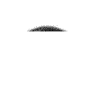

- cameras -
|  |
. We have the right Security Camera for every situation. Easy, attractive, inexpensive PalmVID Cameras will solve all of your video security concerns. Dome Cameras, Night-Vision Cameras, Motion-Based Recording Cameras, and much more. Imagine setting up a camera system, without running any wires between the camera and the VCR. |
. But it is up to us to decide if they are here to stay, and if they are, then under what conditions. Commonplace outside private companies, storefronts and apartment buildings, in parks and at intersections, surveillance cameras have been passively accepted as necessary for our personal safety. At this stage in their proliferation, we need to take an active, not passive, role in the decision-making process that allows for the installation of video surveillance cameras. But there is an equal, if not greater, number of situations in which cameras become not protective, but invasive.
 |
. This group sought out every camera, public or private, which records people in public space. From the records they made of the camera locations, the volunteers produced a comprehensive map of all 2,397 surveillance cameras in Manhattan. Clearly, video surveillance cameras have arrived on the streets of New York City. But it is up to us to decide if they are here to stay, and if they are, then under what conditions. |
|
00 ALL MAJOR CHARGE CARDS ACCEPTED RELIABLE CHIMES , INC. . Ten fake,dummy , simulated security cameras SIMULATED SECURITY CAMERAS Below are ten simulated security cameras please click on the pictures for more information. Real metal camera housing with blinking light Focal lengths printed on real lens housing Operates by four AA Batteries (included) or by transformer Model SC105 T) Both models will have cable connected to the rear to present a realistic appearance. Real coax cable (included) to provide a VERY realistic appearance. |
read more at: http://www.mediaeater.com/cameras/